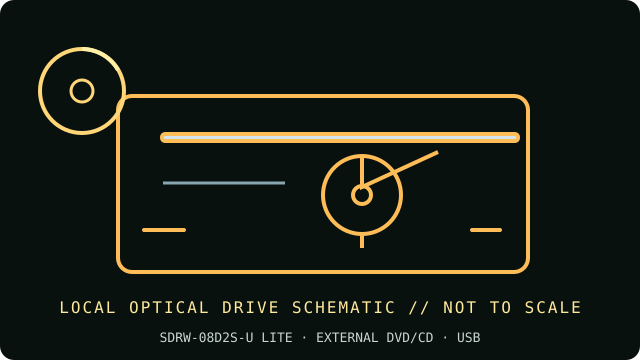

[ INDIVIDUAL COMPONENT // OPTICAL DRIVES ]
ASUS SDRW-08D2S-U LITE External DVD Writer
External slim 8× DVD writer sold as the LITE variant. ASUS separately lists SDRW-08D2S-U; retain the LITE suffix in inventory and verify its label before applying specifications or support files.

IDENTIFICATION: ASUS SDRW-08D2S-U LITE · Match the complete label, service code and manual revision before relying on a feature or installing firmware.
Verified specifications
| Catalog subcategory | External DVD writers |
|---|---|
| Exact product identifier | ASUS SDRW-08D2S-U LITE |
| Supported DVD/CD formats | Reads DVD-ROM, DVD±R/RW, DVD±R DL, DVD-RAM, M-DISC and CD-ROM/R/RW. Writes DVD±R/RW, DVD±R DL, DVD-RAM, M-DISC DVD+R and CD-R/RW. |
| DVD read/write speeds | DVD±R write up to 8×; DVD±R DL up to 6×; DVD+RW up to 8×; DVD-RW up to 6×; DVD-RAM up to 5×; M-DISC DVD+R SL up to 4×. DVD read up to 8×. |
| CD read/write speeds | CD-R/RW write up to 24×; CD-ROM/R/RW read up to 24×. |
| USB interface and power | External USB 2.0 slim tray drive, USB bus-powered; no separate AC supply specified for standard operation. Do not use a passive hub if a host connection is unstable. |
| Compatibility, software and caveats | ASUS lists Windows and Mac support. Disc encryption, drag-and-burn and bundled media features require ASUS/CyberLink/Nero software versions compatible with the OS; support applications and licenses may be discontinued. A current host may need separate DVD playback software. |
Use and preservation notes
- Close the tray and keep the drive level during operation; do not disconnect or remove a disc during an active write.
- Use known-good media and a conservative supported speed for archival copies. Finalize as appropriate and read back the disc; retain a checksum and log drive model, firmware, software, media ID and errors.
- Store optical media in protective cases away from heat, direct light, humidity, scratches and adhesive labels. Keep more than one verified copy.
Manufacturer and manual sources
- ASUS — SDRW-08D2S-U LITE official product pageASUS model-specific product page; retain the LITE suffix.
- ASUS — SDRW-08D2S-U LITE support and documentationManufacturer support entry for the exact LITE model identifier.
Advertised maxima are media-dependent drive ratings, not guarantees of a successful burn or recovery from damaged/aged media. Exact host and software support can change by region and operating-system release.